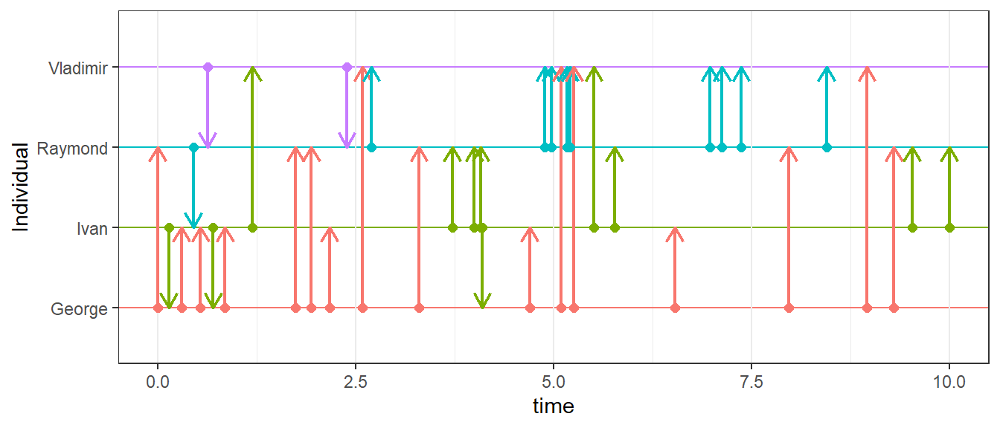
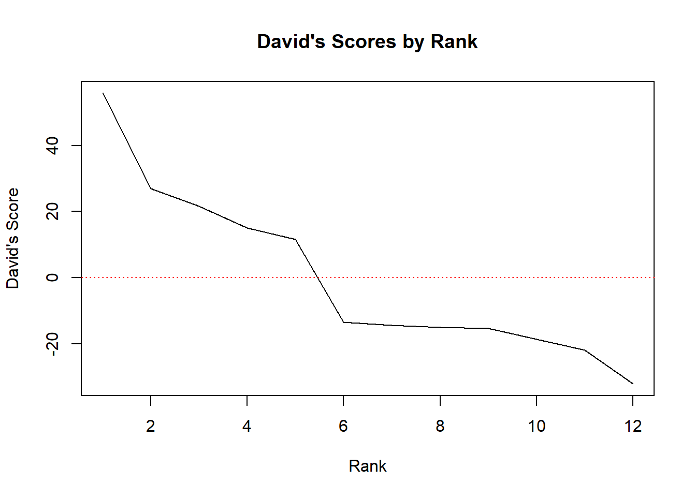
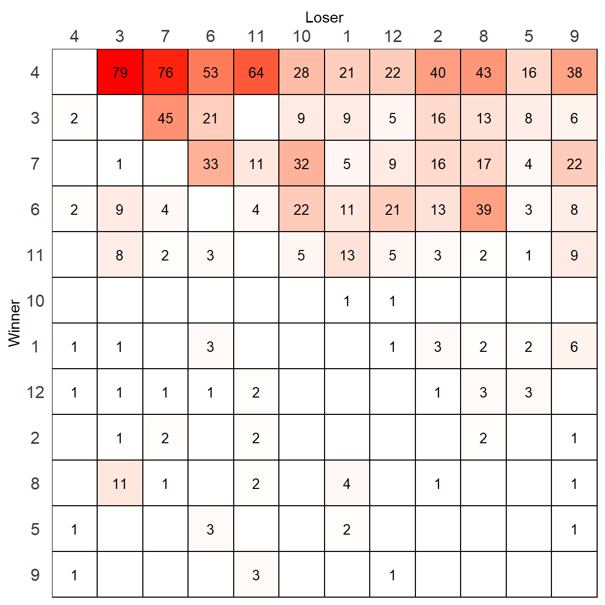
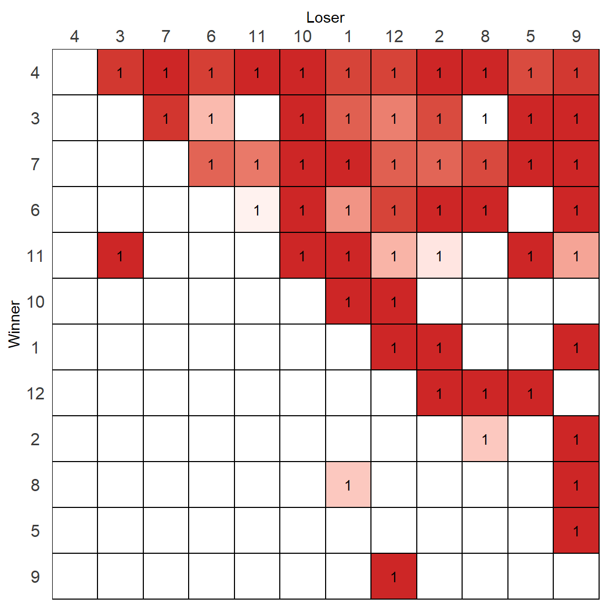
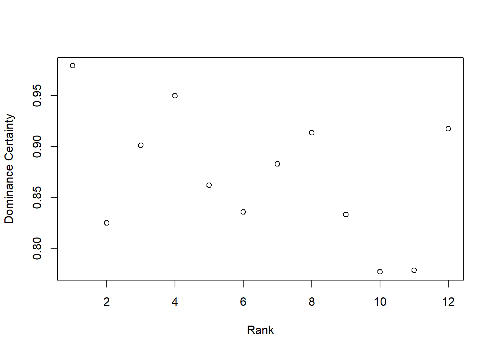
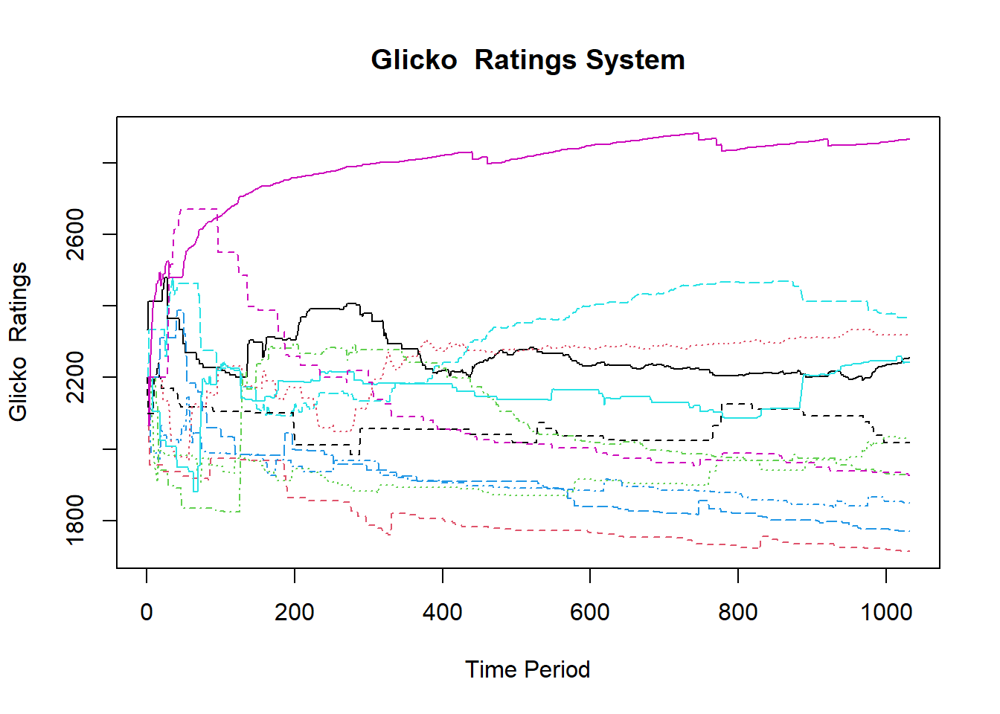
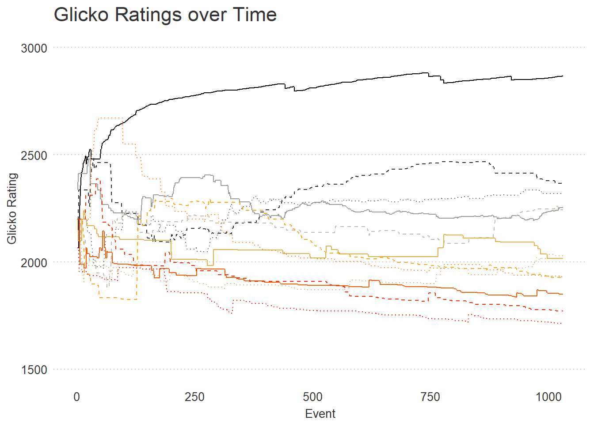
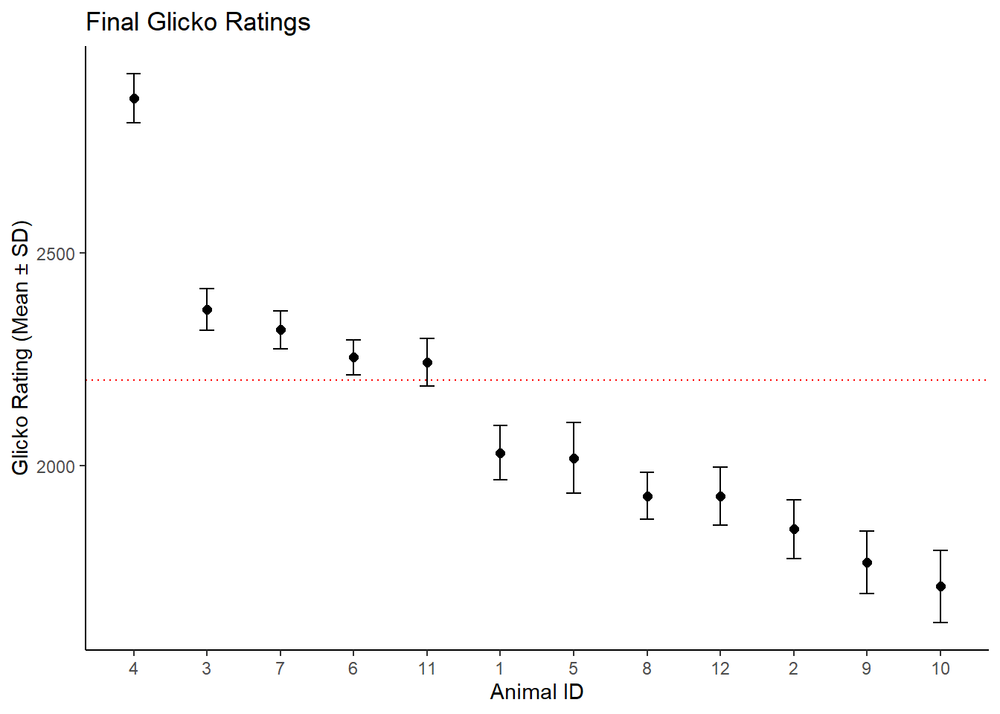
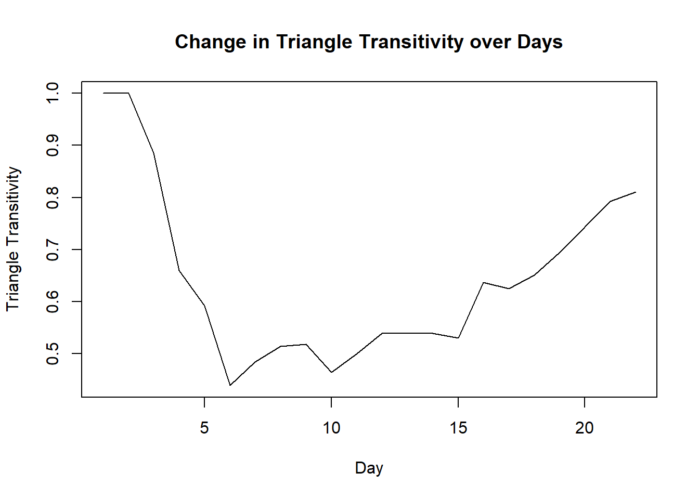
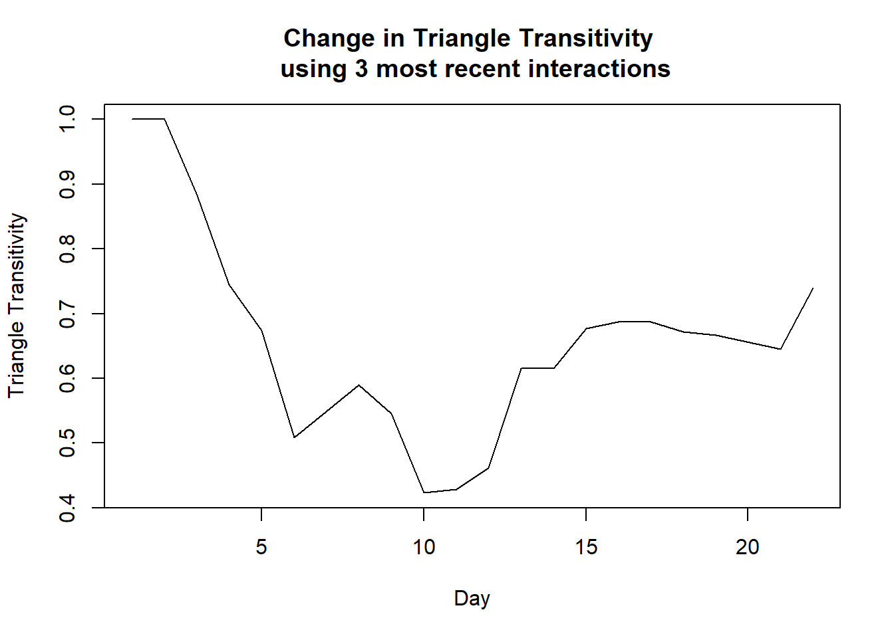

Chapter 2 Analyzing Social Hierarchy Data
2.1 Overview
This is a brief introduction into how my lab analyzes social hierarchy data. It is primarily for my students to use as a guide, but much of it is probably useful for anybody that has any type of win-loss data.
We will use an example raw data file from our lab and various R packages to analyze the data. We will heavily use my compete R package for analyzing competitive social interactions. The package contains some functions for transitioning data from edgelists of winner-losers to raw frequency win-lose sociomatrices to binary sociomatrices. The package also contains several functions for calculating particular hierarchy metrics. Additional R packages for calculating other metrics that we will use are detailed below. We will also source some code I’ve stored on GitHub (compete_extra.R) that contains several functions used here.
2.2 Raw Data
We collect data on which animals win and lose during dyadic agonistic interactions that occur continuously within a social group. Typically we study groups of 12 individuals - each individual being randomly assigned the numbers 1-12 to identify them. Wins and losses (and ties) are collected in real time by observers who upload to a Google Survey data sheet. One option for retrieving the raw data would be to automatically download the data from Google Survey itself using an R package like googlesheets4. However, for now the simplest method is to download the raw data file from Google and store it somewhere. I have done this for an example file and stored it on GitHub.
Note to students: make sure you download the file as a csv file not an xls file. The timestamp column should have seconds in it - if you save as an xls file it may get rid of the seconds and they will all appear as 00.
For this introduction, we will use the data stored here:
df <- read.csv("https://gist.githubusercontent.com/jalapic/97d05d598e9d4d96be5686e87b5bd452/raw/fe60da1542527d159e105c5560f250886f54a2dc/mousedata.csv", stringsAsFactors = F)
head(df)## Timestamp Actor Behavior Recipient Location Observer Notes
## 1 10/14/2014 11:57:16 Start Start Start Start CW <NA>
## 2 10/14/2014 12:03:10 6 Mounting 10 NB4 CW <NA>
## 3 10/14/2014 12:04:16 6 Fighting 5 NB5 CW <NA>
## 4 10/14/2014 12:19:27 3 Fighting 4 ML CW <NA>
## 5 10/14/2014 12:28:05 4 Subordinate 10 LL CW <NA>
## 6 10/14/2014 12:30:49 4 Fighting 2 NB1 CW <NA>2.3 Data Cleanup
The first thing to do with the raw data is to clean up mistakes made by observers and to check for other mistakes. These will generally be put in the notes column, but there are others to check for. The main issues are to do with animals being misidentified or observers forgetting to enter a start/end time or adding multiple start/end times.
Most notes in this example dataset are blank - but you can see those that are there by doing the following to remove NA:
## [1] "long fight, it wasn't clear who started it, neither gave in"
## [2] "chased from mid left to upper left, some biting of the tsail"
## [3] "chase from UR to UL"
## [4] "UR => UL"
## [5] "unrelated to previous fight -- abt a min later"
## [6] "UL => UR"
## [7] "late bc extractim"
## [8] "**last note was supposed to say late bc extracting rna with rahia"
## [9] "another incidence, not a double record"
## [10] "another incidence, not a double record"
## [11] "in general, the mice were much less active during the second hour"
## [12] "in general, the mice were much less active during the second hour"
## [13] "happened in the tube between lower left and nest box 2"
## [14] "***weird bc 3 is notma"
## [15] "comment a few back was supposed to say weird bc 3 is normally dominant, but im sure it was 3"
## [16] "contextual aggression?"
## [17] "ul down to nb5"
## [18] "at the same time as 6 chased 10"
## [19] "couldn't tell who won"
## [20] "6 attacked first then 4 wins the fight"
## [21] "prolonged intense fight tied, though 6 fleed at last"
## [22] "prolonged intense fight tied, though 6 fleed at last"
## [23] "internet disruption at 12 45pm"
## [24] "8 has distinguished size of testes"The only comment here that needs double checking is the one where the observer couldn’t determine who won. That contest should be scored as a tie. We can check by finding the row number and searching for it.
## [1] 951## Timestamp Actor Behavior Recipient Location Observer
## 951 11/3/2014 15:44:34 2, 9 Fighting 2, 9 NB5 BN
## Notes
## 951 couldn't tell who wonAs can be seen, it’s a tie between 2 & 9.
2.3.1 Time Formats
Next, it’s useful to add a day column and a time column. The following assumes:
- that the first day of observations was the first day of housing (it almost always is).
- that there were no changes in daylight savings or light cycle
- that the google survey was set up in EST.
- that the observations all took place within the same calendar year.
If any of the above are not true, the following code needs to be adjusted. If they are all true we’ll first convert the Google Survey timestamp to R’s Date-Time format and extract the day and time.
We use the lubridate package to extract hours and days. We also make sure the Date-Time format we use is POSIXct as POSIXlt uses too much memory. The first day of observations is day 1. The first hour of observation each day is at 12pm when the lights change from white to red (the animals become more active in red light/dark phase).
df$Timestamp <- as.POSIXct(strptime(df$Timestamp,'%m/%d/%Y %H:%M:%S'))
df$day <- lubridate::yday(df$Timestamp) - min(lubridate::yday(df$Timestamp)) + 1
df$zhour <- lubridate::hour(df$Timestamp)-11
head(df)## Timestamp Actor Behavior Recipient Location Observer Notes day
## 1 2014-10-14 11:57:16 Start Start Start Start CW <NA> 1
## 2 2014-10-14 12:03:10 6 Mounting 10 NB4 CW <NA> 1
## 3 2014-10-14 12:04:16 6 Fighting 5 NB5 CW <NA> 1
## 4 2014-10-14 12:19:27 3 Fighting 4 ML CW <NA> 1
## 5 2014-10-14 12:28:05 4 Subordinate 10 LL CW <NA> 1
## 6 2014-10-14 12:30:49 4 Fighting 2 NB1 CW <NA> 1
## zhour
## 1 0
## 2 1
## 3 1
## 4 1
## 5 1
## 6 1## Timestamp Actor Behavior Recipient Location Observer
## 1054 2014-11-04 13:51:49 4 Fighting, Chasing 6 LL WL
## 1055 2014-11-04 13:52:49 4 Chasing 6 UL WL
## 1056 2014-11-04 13:53:42 4 Chasing 10 UL WL
## 1057 2014-11-04 13:55:10 6 Chasing 12 LL WL
## 1058 2014-11-04 13:56:48 4 Chasing 10 UL WL
## 1059 2014-11-04 14:00:48 End End End End WL
## Notes day zhour
## 1054 <NA> 22 2
## 1055 <NA> 22 2
## 1056 <NA> 22 2
## 1057 <NA> 22 2
## 1058 <NA> 22 2
## 1059 <NA> 22 3## [1] 1 2 3 4 5 6 7 8 9 10 11 12 13 14 15 16 17 18 19 21 22Notice that there are no observations for day=20 - this will be relevant later on when we plot data by day.
2.3.2 Actor/Recipients
Next we will look at the Actor and Recipient variables.
## [1] "Start" "6" "3" "4" "5" "1" "9" "2, 4"
## [9] "End" "12" "2" "7" "11" "1, 2" "10, 11" "8"
## [17] "10" "2, 9" "2, 11" "7, 11" "4, 6" "3, 6"## [1] "Start" "10" "5" "4" "2" "1"
## [7] "11" "8" "2, 4" "7" "3" "6"
## [13] "End" "9" "7, 10" "1, 2" "10, 11" "12"
## [19] "1, 9" "7, 8" "7, 12" "2, 6" "8, 10" "3, 7"
## [25] "11, 12" "2, 9" "2, 7" "2, 8, 10" "1, 7, 12" "3, 6"
## [31] "6, 8" "2, 11"First of all, we can remove the ‘Start’ and ‘End’ rows. These indicate when an observer starts and finishes their set observation. We need these when counting rates of behavior per hour, but we won’t do that in this example.
The next thing to deal with is that some rows have multiple values in the ‘Actor’ or ‘Recipient’ columns. This can be either:
two individuals tie during a contest (then both Actor and Recipient will have same two animals in the entry) one Actor beats more than one Recipient simultaneously one Recipient is beaten by more than one Actor simultaneously (much less common)
To simplify this process, I have stored a function - expandrows on GitHub that we can source. With time, I’ll add this function to my CurleyLab R package to make it easily available. To use it, you must have splitstackshape and data.table installed. The former is a great package for easy management of google survey type data. This function also adds a column ‘score’ with a 1 indicating a clear win for the Actor vs the Recipient, and a 0.5 indicating a tie.
source("https://gist.githubusercontent.com/jalapic/6ca3ece44bdcdc522bb735f183aa0ca0/raw/1a07f469eff08117121b6cbebcd22fb7569e3ee8/compete_extra.R")
df1<-expandrows(df)
head(df1)## Timestamp Actor Behavior Recipient Location Observer Notes day
## 1: 2014-10-14 12:03:10 6 Mounting 10 NB4 CW <NA> 1
## 2: 2014-10-14 12:04:16 6 Fighting 5 NB5 CW <NA> 1
## 3: 2014-10-14 12:19:27 3 Fighting 4 ML CW <NA> 1
## 4: 2014-10-14 12:28:05 4 Subordinate 10 LL CW <NA> 1
## 5: 2014-10-14 12:30:49 4 Fighting 2 NB1 CW <NA> 1
## 6: 2014-10-14 12:34:39 4 Fighting 2 NB5 CW <NA> 1
## zhour score
## 1: 1 1
## 2: 1 1
## 3: 1 1
## 4: 1 1
## 5: 1 1
## 6: 1 1## [1] 1031##
## 1 2 3 4 5 6 7 8 9 10 11 12
## 20 10 136 480 7 136 150 20 5 3 51 13##
## 1 2 3 4 5 6 7 8 9 10 11 12
## 66 94 111 9 37 119 131 121 93 96 89 65##
## 0.5 1
## 6 1025In total we have 1031 agonistic interactions of which only 6 are ties.
Having got our data cleaned up, we can quickly look at a preliminary raw sociomatrix:
## Recipient
## Actor 1 2 3 4 5 6 7 8 9 10 11 12
## 1 0 4 1 1 2 3 0 2 6 0 0 1
## 2 0 0 1 1 0 0 2 2 2 0 2 0
## 3 9 16 0 2 8 23 45 13 6 9 0 5
## 4 21 40 79 0 16 53 76 43 38 28 64 22
## 5 2 0 0 1 0 3 0 0 1 0 0 0
## 6 11 13 9 2 3 0 4 39 8 22 4 21
## 7 5 16 1 0 4 33 0 17 22 32 11 9
## 8 4 1 11 0 0 0 1 0 1 0 2 0
## 9 0 0 0 1 0 0 0 0 0 0 3 1
## 10 1 0 0 0 0 0 0 0 0 0 1 1
## 11 13 3 8 0 1 3 2 2 9 5 0 5
## 12 0 1 1 1 3 1 1 3 0 0 2 02.4 Data Analysis
Once our data is in this clean format we can proceed with the basic data analysis. First of all we will consider all behaviors together - i.e. we won’t subset or weight by fighting, chasing, mounting or subordinate behaviors. We may want to do this for more fine-grained analysis, but not for this example. Also, we will consider all data collected over all days together to start with.
We will use the compete package to create sociomatrices and calculate several metrics.
2.4.1 Create Sociomatrices
First we only need the winner and loser variables. Also, in this basic analysis, we will exclude ties. We could consider ties to be a 0.5 win, but given their low prevalence, it does not affect our results to exclude here. (Note the get_wl_matrix and get_di_matrix functions in compete can also automatically remove ties).
Also, because df1 is actually a data.table (produced by the expandrows function), we need to use data.table style indexing.
## Actor Recipient
## 1: 6 10
## 2: 6 5
## 3: 3 4
## 4: 4 10
## 5: 4 2
## 6: 4 2The get_wl_matrix creates a raw frequency sociomatrix of wins and losses. This is similar to the table above. Here, e.g. animal 6 ‘won’ 13 times against animal 2, and animal 7 had 17 wins against animal 8.
## Recipient
## Actor 1 10 11 12 2 3 4 5 6 7 8 9
## 1 0 0 0 1 3 1 1 2 3 0 2 6
## 10 1 0 0 1 0 0 0 0 0 0 0 0
## 11 13 5 0 5 3 8 0 1 3 2 2 9
## 12 0 0 2 0 1 1 1 3 1 1 3 0
## 2 0 0 2 0 0 1 0 0 0 2 2 1
## 3 9 9 0 5 16 0 2 8 21 45 13 6
## 4 21 28 64 22 40 79 0 16 53 76 43 38
## 5 2 0 0 0 0 0 1 0 3 0 0 1
## 6 11 22 4 21 13 9 2 3 0 4 39 8
## 7 5 32 11 9 16 1 0 4 33 0 17 22
## 8 4 0 2 0 1 11 0 0 0 1 0 1
## 9 0 0 3 1 0 0 1 0 0 0 0 0For quick visualization purposes, we can use the org_matrix function. There are three methods of displaying the table - by alphanumeric name (alpha), by total wins (wins) or by David’s Scores (a measure of relative dominance).
Using the David’s Scores Methods, it looks a lot clearer that this social group has a hierarchical structure.
## Recipient
## Actor 4 7 3 6 11 10 5 8 1 12 2 9
## 4 0 76 79 53 64 28 16 43 21 22 40 38
## 7 0 0 1 33 11 32 4 17 5 9 16 22
## 3 2 45 0 21 0 9 8 13 9 5 16 6
## 6 2 4 9 0 4 22 3 39 11 21 13 8
## 11 0 2 8 3 0 5 1 2 13 5 3 9
## 10 0 0 0 0 0 0 0 0 1 1 0 0
## 5 1 0 0 3 0 0 0 0 2 0 0 1
## 8 0 1 11 0 2 0 0 0 4 0 1 1
## 1 1 0 1 3 0 0 2 2 0 1 3 6
## 12 1 1 1 1 2 0 3 3 0 0 1 0
## 2 0 2 1 0 2 0 0 2 0 0 0 1
## 9 1 0 0 0 3 0 0 0 0 1 0 0Another useful matrix to keep is the binarized win-loss matrix. This can be done using the get_di_matrix function. There are many ways in which a raw frequency sociomatrix could be converted to a binary matrix involving how to deal with ties, how to deal with structural zeros (unknown relationships where no observations were made between two individuals), and what criteria to use to choose a ‘clear’ winner. Here, we will use the simplest measure of assigning a 1 to individuals who win more frequently than the opposing individual and a 0 to losers or if there are ties (e.g. if both animals had 1 win against each other).
## Recipient
## Actor 4 3 7 6 11 10 5 1 8 2 12 9
## 4 0 1 1 1 1 1 1 1 1 1 1 1
## 3 0 0 1 1 0 1 1 1 1 1 1 1
## 7 0 0 0 1 1 1 1 1 1 1 1 1
## 6 0 0 0 0 1 1 0 1 1 1 1 1
## 11 0 1 0 0 0 1 1 1 0 1 1 1
## 10 0 0 0 0 0 0 0 1 0 0 1 0
## 5 0 0 0 0 0 0 0 0 0 0 0 1
## 1 0 0 0 0 0 0 0 0 0 1 1 1
## 8 0 0 0 0 0 0 0 1 0 0 0 1
## 2 0 0 0 0 0 0 0 0 1 0 0 1
## 12 0 0 0 0 0 0 1 0 1 1 0 0
## 9 0 0 0 0 0 0 0 0 0 0 1 02.5 Basic hierarchy Measures
2.5.1 Descriptives
From the above matrices we can calculate a number of descriptive statistics.
The rshps function gives us the total relationships in the group, the total number of unknown relationships (i.e. each animal recorded 0 wins against each other), the number of relationships that are tied (i.e. no clear winner), the number of twoways relationships (where both animals recorded at least one win) and the number of oneways relationships (where only one animal recorded a win).
## $total
## [1] 66
##
## $unknowns
## [1] 6
##
## $ties
## [1] 3
##
## $twoways
## [1] 25
##
## $oneways
## [1] 322.5.2 Directional Consistency
The Directional Consistency of the sociomatrix - 0 meaning no directional consistency and 1 indicating that all contests are won by more dominant individuals over more subordinate individuals. The skew-symmetry index determines if there is asymmetry in interactions in a sociomatrix. 0 indicates complete reciprocity whereas 0.5 indicates complete unidirectionality.
The dc_test function will run the statistical tests suggested by Leiva et al. 2009 to ascertain if the directional consistency and phi values are significant or not.
## $DC.pvalue
## [1] 1e-04
##
## $phi.pvalue
## [1] 1e-04
##
## $mean_phi
## [1] 0.02529858
##
## $mean_DC
## [1] 0.1286561
##
## $variance_phi
## [,1]
## [1,] 2.548583e-05
##
## $variance_DC
## [,1]
## [1,] 0.0002081977
##
## $DC
## [1] 0.8712195
##
## $phi
## [1] 0.4689508For quick access to the DC and phi values, the following functions can be run:
## [1] 0.8712195## [1] 0.46895082.5.3 De Vries’ Modified h’ value
The most common measure of social hierarchy linearity is the modified h’ value by De Vries 1995. The devries function will provide the h’ value of a sociomatrix and associated p-value from a randomization test.
## $`h-modified`
## [1] 0.7586231
##
## $`p-value`
## [1] 0It’s also possible to plot the results of the randomization test:
## h-modified = 0.7587741
## p-value= 0
2.5.4 Triangle Transitivity
The third measure of hierarchical organization is the triangle transitivity suggested by Shizuka & McDonald 2012. This measure calculate the proportion of transitive versus intransitive triads within the directed network. The index ranges between 0 and 1, with 1 indicating that all triads are transitive (i.e. there are no cycles). This function also provides output from a randomization test to assess if the proportion of transitive triads is higher than expected (i.e. there is hierarchical organization).
## $Pt
## [1] 0.9527027
##
## $ttri
## [1] 0.8108108
##
## $pval
## [1] 0This value can be ascertained quickly using ttri:
## $Pt
## [1] 0.9527027
##
## $ttri
## [1] 0.8108108There are of course several other network measures that could be used to describe the hierarchical organiation of a social hierarchy, but I won’t cover those here.
2.5.5 Steepness
Another measure of hierarchies are how steep the individual differences in David’s Scores are - prosposed by De Vries et al 2006. The higher the steepness, the greater the differences between individual ranks in their ratings. The scores range between 0 and 1, with 1 having the greatest differences between ranks in scores. We can test this using the steepness package.
## [1] 0.5598867## [1] 02.6 Individual Ranking Measures
A proliferation of ranking methods exist to try and determine which individual is more ‘dominant’, ‘powerful’ or ‘influential’ in a group. Many of the more recent methods are network based (I will cover these in a future tutorial/primer), others come from the sports data literature. Here I will describe some standard methods used in animal behavior.
2.6.1 David’s Scores
A simple measure is the David’s Scores of each individual. This can be considered to be the opponent-adjusted win proportion of each individual. Individuals with positive David’s Scores are more dominant. Individuals with negative David’s Scores are losing more fights.
## 1 10 11 12 2 3 4
## -15.31674 -13.52634 11.59505 -18.63460 -21.89749 21.64528 55.85957
## 5 6 7 8 9
## -14.45596 15.03441 26.89502 -15.08334 -32.11487Viewing this as a simple plot shows the steepness of David’s Scores:
plot(1:12, rev(sort(ds(wlmat))), "l",
xlab = "Rank",
ylab = "David's Score",
main = "David's Scores by Rank")
abline(h = 0, col = "red", lty = 3)
2.6.2 I&SI Method
A commonly used method is the linear ordering algorithm - the I&SI ranking method. This attempts to shuffle the binary sociomatix such that 1s are all above the diagonal and 0s are all below the diagonal. Further, it tries to get 1s under the diagonal as close to it as possible. This is computationally expensive - and I need to implement this in C++ in the next version of the compete package. There are two versions of this algorithm - isi98 is the original method proposed here and isi13 is the updated method proposed here. I recommend using the former as the updated version is too slow for most matrices - and the additional benefit in improved linear ordering isn’t huge. Also, it is worth running this procedure a few times to find the optimal ranking as it uses randomization to try and find the best matrix.
The output gives the initial matrix order, the proposed ‘best matrix’, the I (number of inconsistencies), the SI (the strength of inconsistencies), and the ‘best order’ of ranks. It also gives ‘rs’ the correlation between the ranks proposed by the I&SI method and the David’s Scores. Running this example several times, it appears as if the best solution is I=3, SI=10 and rs=0.88.
##
## INITIAL RANK:
## [1] "4" "7" "3" "6" "11" "10" "5" "8" "1" "12" "2" "9"
## I = 6
## SI = 13## $best_matrix
## Recipient
## Actor 4 3 7 6 11 10 1 12 2 8 5 9
## 4 0 79 76 53 64 28 21 22 40 43 16 38
## 3 2 0 45 21 0 9 9 5 16 13 8 6
## 7 0 1 0 33 11 32 5 9 16 17 4 22
## 6 2 9 4 0 4 22 11 21 13 39 3 8
## 11 0 8 2 3 0 5 13 5 3 2 1 9
## 10 0 0 0 0 0 0 1 1 0 0 0 0
## 1 1 1 0 3 0 0 0 1 3 2 2 6
## 12 1 1 1 1 2 0 0 0 1 3 3 0
## 2 0 1 2 0 2 0 0 0 0 2 0 1
## 8 0 11 1 0 2 0 4 0 1 0 0 1
## 5 1 0 0 3 0 0 2 0 0 0 0 1
## 9 1 0 0 0 3 0 0 1 0 0 0 0
##
## $best_order
## [1] "4" "3" "7" "6" "11" "10" "1" "12" "2" "8" "5" "9"
##
## $I
## [1] 3
##
## $SI
## [1] 10
##
## $rs
## [1] 0.88111892.6.3 Despotism
Another metric we can calculate is the proportion of wins made by each animal. The proportion of wins made by the alpha male is that individual’s ‘despotism’. I’ll implement this as a function in the compete package in the future - at present, it can be found in the sourced code from GitHub above.
## 4 7 6 3 11 8 1 12 2 5 9 10
## 46.83 14.63 13.27 13.07 4.98 1.95 1.85 1.27 0.78 0.68 0.49 0.202.7 Plotting Sociomatrices
We can also use the observed best ranking order of our choice to make a customized raw sociomatrix that we could use in a publication. This is using a ggplot2 based function I wrote called matrixplot. If you lookup the function, you can change the color scheme if you wish.

There is also a plot to color the binarized matrix based on the directional consistency of each relationship. The redder a cell, the higher the proportion of wins by that individual. This method is useful for quickly visualizing the inconsistencies in the hierarchy.

Interestingly the relationship that has the most noticable inconsistency is id-11 vs id-3, where 11 beat 3 eight times but 3 never beat 11. This is despite 3 being higher ranked than 11. Often when examining all data over all days such inconsistencies may be the result of initial day 1 or day 2 interactions. This can be checked using the function contests.
## Timestamp Actor Behavior Recipient Location Observer Notes day
## 1: 2014-10-16 12:42:13 11 Subordinate 3 UR CW <NA> 3
## 2: 2014-10-16 12:42:32 11 Chasing 3 UL CW <NA> 3
## 3: 2014-10-16 13:25:25 11 Chasing 3 UL CW <NA> 3
## 4: 2014-11-03 14:50:47 11 Chasing 3 UR AP <NA> 21
## 5: 2014-11-03 14:51:49 11 Chasing 3 UR AP <NA> 21
## 6: 2014-11-03 14:54:48 11 Chasing 3 UR AP <NA> 21
## 7: 2014-11-03 14:57:49 11 Chasing 3 UR AP <NA> 21
## 8: 2014-11-04 13:23:32 11 Induce-flee 3 UR WL <NA> 22
## zhour score
## 1: 1 1
## 2: 1 1
## 3: 2 1
## 4: 3 1
## 5: 3 1
## 6: 3 1
## 7: 3 1
## 8: 2 1Here there are three early interactions on day 3, but 11 continues to beat 3 on the last two days of observation. This was by three separate observers suggesting that it is reliable. Most interestingly though, none of the agonistic interactions were fights - all were chases or induced subordinate behaviors (in our ethogram ‘induced-flee’ means here that animal 11 caused 3 to flee and on row 1 that animal 11 caused animal 3 to show a subordinate posture.
Clearly, there are many other methods for assessing the individual rankings/ratings of a social group. There are several network based metrics, matrix based measures, preferred comparison methods etc. I may cover these in a future primer.
2.8 Network Certainty
Another valuable approach is to measure the certainty we have of each individual’s ranking using network certainty. With this method, we can get the ranking of each individual according to their network position (akin to how much power or influence over others an individual has) and determine how certain we are of that ranking by examining the consistency of indirect relationships. We can use the Perc R package to do this.
library(Perc)
obsmat <- as.conflictmat(wldf)
DominanceProbability.obs <- conductance(obsmat, maxLength = 2)
s.rank.obs <- simRankOrder(DominanceProbability.obs$p.hat, num = 10, kmax = 10)
dfobs <- merge(individualDomProb(DominanceProbability.obs$p.hat), s.rank.obs$BestSimulatedRankOrder)
plot(dfobs$ranking, dfobs$Mean,
xlab="Rank", ylab="Dominance Certainty")
2.9 Temporal Based Methods
2.9.1 Glicko Ratings
There are a number of temporally based ratings methods that calculate dynamic changes in ratings over time. Two of these methods - ELO & Glicko - are pairwise-contest models where all individuals start with an initial rating. Without any other knowledge about the individuals we assume they all have the same initial ratings. Individuals gain points for each win and lose points for each loss. The magnitude of the gain/loss in points is based on the ratings difference between contestants at a particular time. Each method has a constant value that adjusts this calculation. I prefer the Glicko method because it additionally has a standard deviation of ratings giving us a measure of how certain we are that individuals differ. The Glicko also has a decay function meaning that the rating uncertainty increases if individuals haven’t competed in a while.
We could calculate ratings at the end of each day. Most primate studies use this approach. However, as we observe all animals all of the time, I prefer to recalculate ratings after every observation and use a smaller constant value (a higher constant value makes the ratins more volatile - they respond to changes more rapidly).
We can use the PlayerRatings package to calculate the Glicko ratings like this:
library(PlayerRatings)
df1 <- df1[order(df1$Timestamp),] #ensure in date order
df1$event <- 1:nrow(df1)
glick.df <- df1[, c(11,2,4,10), with = FALSE] #need event, actor, recipient, score
gl <- glicko(glick.df, history=T, cval=2)
gl##
## Glicko Ratings For 12 Players Playing 1031 Games
##
## Player Rating Deviation Games Win Draw Loss Lag
## 1 4 2866 58.04 489 480 1 8 0
## 2 3 2367 49.09 247 134 2 111 15
## 3 7 2319 44.76 281 150 0 131 45
## 4 6 2254 41.33 255 136 2 117 1
## 5 11 2242 56.02 140 51 1 88 7
## 6 1 2030 64.35 86 19 1 66 16
## 7 5 2017 83.67 44 7 0 37 34
## 8 8 1928 55.20 141 20 0 121 24
## 9 12 1927 68.72 78 13 0 65 1
## 10 2 1849 69.54 104 8 3 93 7
## 11 9 1771 73.70 98 5 1 92 14
## 12 10 1714 85.92 99 2 1 96 0Of course, the choice of cval affects how volatile individual ratings are. When recalculating ratings after every behavioral interaction, we have found that a lower value of cval provides stable rankings that most strongly reflect the rankings of animals as determined by other methods.
How Glicko ratings change over time can be calculated using the basic plot function:

The above base r plot is not aesthetically pleasing. I have created a default function that allows us to take a glicko object and convert this to a more attractive plot.

We can also plot the final glicko ratings by rank and show the deviations in ratings scores.
ggplot(gl$ratings, aes(x=1:12, y=Rating)) +
geom_point(size=2) +
scale_x_continuous(breaks=1:12, labels=gl$ratings$Player)+
geom_errorbar(aes(ymin=Rating-Deviation, ymax=Rating+Deviation),
width=.2,
position=position_dodge(.9),
size=.5) +
geom_hline(yintercept=2200, color='red', linetype='dotted')+
ylab("Glicko Rating (Mean ± SD)") +
xlab("Animal ID") +
theme_classic() +
ggtitle("Final Glicko Ratings")
2.9.2 Stability Indices
To examine how ‘stable’ rankings are across time, one could use the stability index suggested by Neumann et al 2011 and improved upon by Mcdonald & Shizuka 2013. This essentially assesses how many ranking changes there have been across days between two time-points. It ranges between 0 and 1 with 1 indicating complete stability and 0 indicating complete instability in ranking. Here, I will evaluate stability across the whole period using the ELO method as the baseline for assessing ranks. There could be many modifications to this - we could use a different method for determining ratings on each day, we could use a different time-point for comparison (e.g. per hour), we could also change the constant in the ELO formula. There is also a ‘weighting’ factor in this algorithm that accounts for whether to penalize rank changes among higher ranked animals as more impactful on ‘stability’. In the example below, I’ve used the default weighting factor, though the function of this weighting could be adjusted. I may write more about this in the future. We will use the EloRating package to calculate this.
df1.st <- df1[score==1] # we only consider wins at the moment
df1.st$Date <- as.character(as.Date(df1.st$Timestamp)) #ELO stability function requires a character vector of form "YYYY-MM-DD"
SEQ <- EloRating::elo.seq(winner=df1.st$Actor, loser=df1.st$Recipient, Date=df1.st$Date, k=100, progressbar=FALSE) #note that could change k-factor here; k=100 default
SI <- EloRating::stab_elo(SEQ, from=min(SEQ$stability$date),to=max(SEQ$stability$date), weight=T)
SI## [1] 0.9138Again, there are many other dynamic network based measures of individual ratings that we could use instead. Depending on the data collected and the question of interest, there may be benefits to choosing these methods. I may write a primer on these also in the future.
2.9.3 Temporal Social Dynamics
Calculating indices of hierarchical organization using all data at once may not be suitable. We may, for instance, wish to see how one metric changes over time. Here, we will look at how triangle transitivity changes over time.
Below, we split the raw data into a new dataframe for everyday containing data from day 1 up to that day. Therefore there are 21 dataframes in total (as there are 21 days’ worth of data - although the last day of observations was 22, we did not have any observations for day 20).
wlmat.days <- lapply(
Reduce(rbind, split(df1, df1$day), accumulate=TRUE),
function(x) get_wl_matrix(x[score==1][, c(2,4), with = FALSE])
)
wlmat.days[[1]]## Recipient
## Actor 1 10 11 2 3 4 5 6 7 8 9
## 1 0 0 0 0 0 0 0 0 0 1 0
## 10 0 0 0 0 0 0 0 0 0 0 0
## 11 0 0 0 0 0 0 0 0 0 0 0
## 2 0 0 0 0 0 0 0 0 0 0 0
## 3 0 0 0 0 0 1 0 1 0 0 0
## 4 4 1 2 4 1 0 2 0 1 1 0
## 5 2 0 0 0 0 0 0 0 0 0 0
## 6 1 2 0 1 0 0 1 0 0 0 0
## 7 0 0 0 0 0 0 0 0 0 0 0
## 8 0 0 0 0 0 0 0 0 0 0 0
## 9 0 0 1 0 0 0 0 0 0 0 0The above matrix is the winner-loser sociomatrix based on only day 1 data.
We can then plot how triangle transitivity changes across days:
plot(c(1:19,21:22), unlist(lapply(wlmat.days, function(x) ttri(x)$ttri)), "l",
xlab = "Day",
ylab = "Triangle Transitivity",
main = "Change in Triangle Transitivity over Days")
Of course, we could prefer to use a different temporal strategy. For instance, we could use a sliding window approach looking at how triangle transitivity changes for e.g. 3 days at a time. So we would plot ttri for days 1-3, then days 2-4, 3-5 etc.
Another extension of this approach is something we discussed in our Animal Behaviour paper. At the end of each day, we could only keep the last ‘n’ interactions between any pair of individuals. This has the advantage of not including behavioral events that occurred long before the day of interest. For example, if animal A had accrued 100 wins against B and B had never beaten A, then if that relationships changed on e.g. day 10 it could take several days to register in the ttri - because it could take a long time for B to get more than 100 wins against A to ‘flip’ that relationship. Only considering e.g. the last 3 interactions overcomes this issue.
To do these calculations we can use a function I wrote that we have already sourced from GitHub above.
ttri_N <- lapply(
Reduce(rbind, split(df1, df1$day), accumulate=TRUE),
function(x) ttri_lastN(x, N=3)
)
plot(c(1:19,21:22), unlist(ttri_N), "l",
xlab = "Day",
ylab = "Triangle Transitivity",
main = "Change in Triangle Transitivity \n using 3 most recent interactions")
2.10 Summary
In this brief primer, I have shown you how to import the raw data, clean the data up for analysis, calculate measures of overall hierarchical nature of the group and calculate individual metrics of dominance. I’ve also shown how to look at some temporal dynamics.